| Common Name | Scientific Name | References |
|---|---|---|
| Texas False Potato Beetle 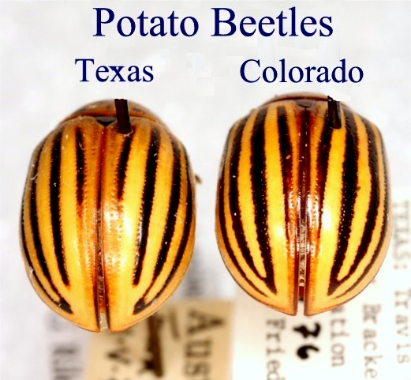 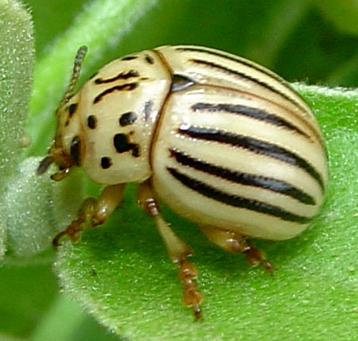 | Leptinotarsa texana | BugGuide | iNat |
| Defecta False Potato Beetle 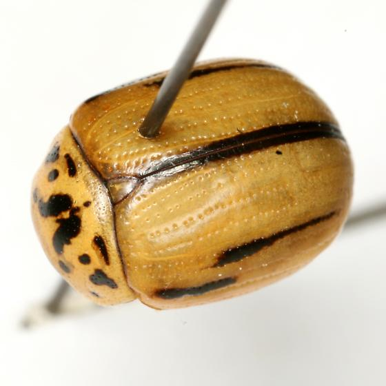 | Leptinotarsa defecta | BugGuide | iNat |
| Stem-boring Weevil 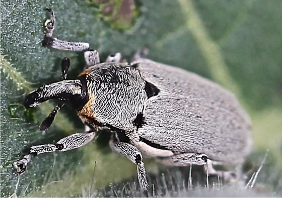 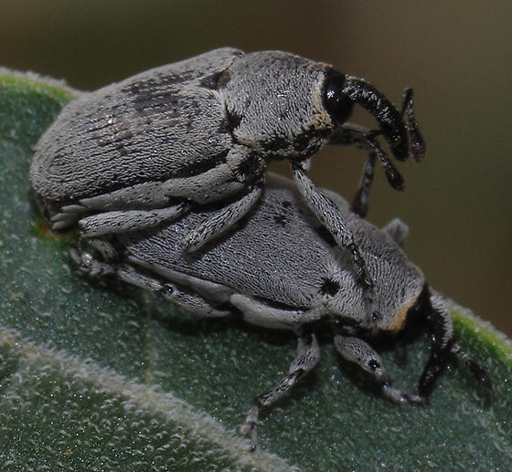 | Trichobaris texana | BugGuide | iNat |
| Aeneolus Weevil 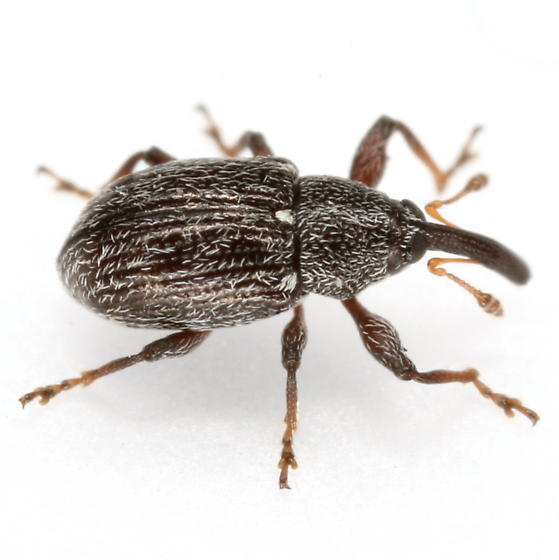 | Anthonomus aeneolus | BugGuide | iNat |
| Brevirostris Weevil | Anthonomus brevirostris | BugGuide |
| Flea Beetle 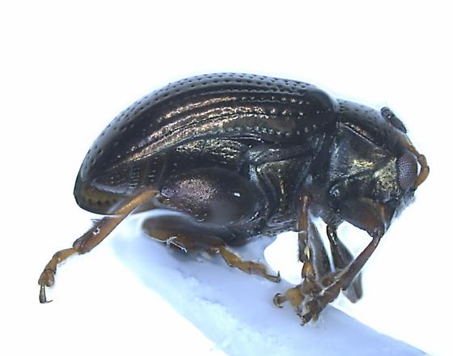 | Chaetocnema minuta | BugGuide | iNat |
| Flea Beetles | Epitrix sp. | BugGuide | iNat |
| Eggplant Tortoise Beetle 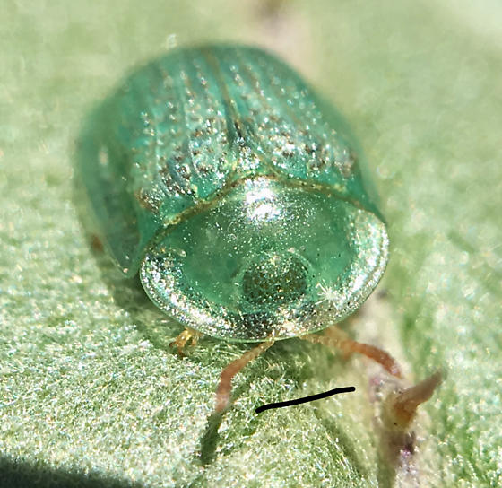 | Gratiana pallidula | BugGuide | iNat |
| Common Name | Scientific Name | References |
|---|---|---|
| Lace Bug 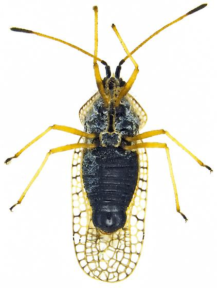 | Gargaphia arizonica | BugGuide | iNat |
| Lace Bug | Gargaphia opacula | BugGuide | iNat |
| Say Stink Bug 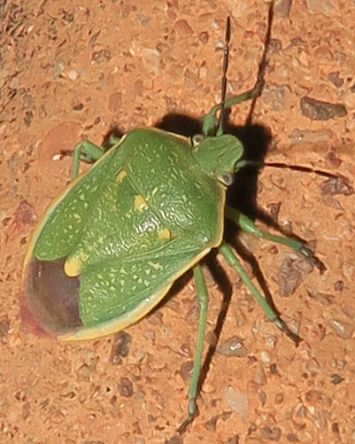 | Chlorochroa sayi | BugGuide | iNat |
| Clover Leafhopper 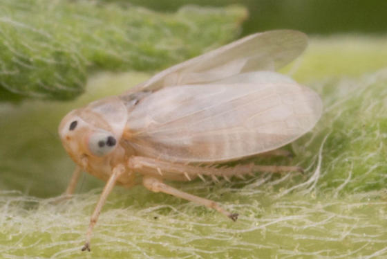 | Aceratagallia sanguinolenta | BugGuide | iNat |
| Common Name | Scientific Name | References |
|---|---|---|
| Eggplant Leafminer 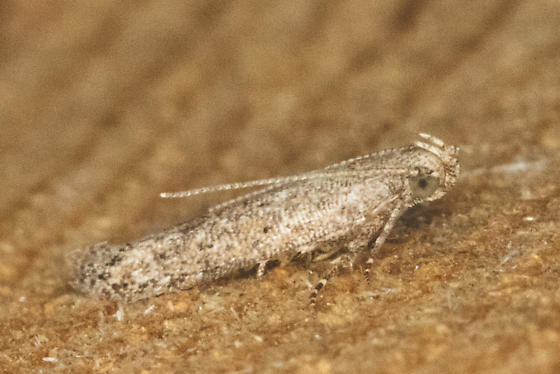 | Keiferia glochinella | BugGuide | iNat |
| Tobacco Hornworm 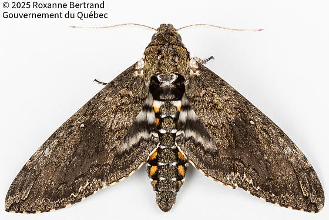 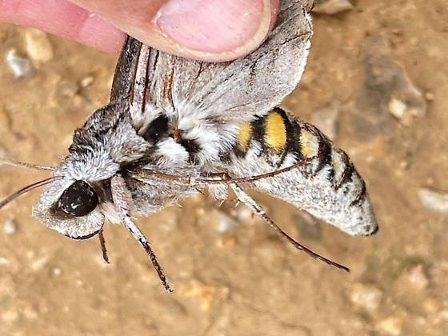 | Manduca sexta | BugGuide | iNat |
| Salt-marsh Caterpillar 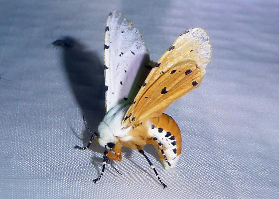 | Estigmene acrea | BugGuide | iNat |
| Leaf-tying Moth | Symmetrischema ardeola | BugGuide | iNat |
| Common Name | Scientific Name | References |
|---|---|---|
| Fruit Fly 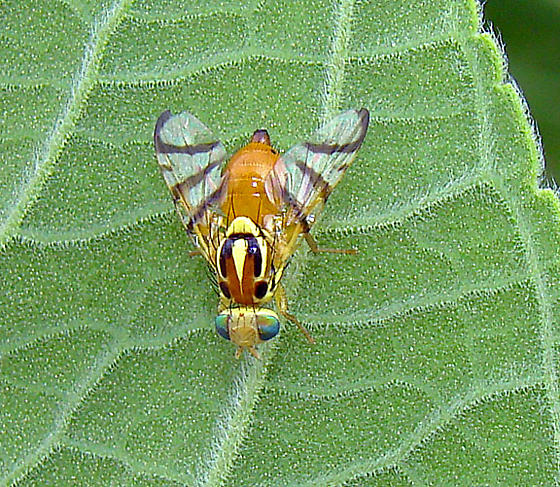 | Zonosemata vittigera | BugGuide | iNat |
| Vagrant Grasshopper 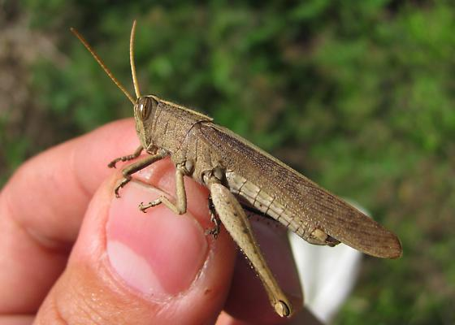 | Schistocerca vaga | BugGuide | iNat |
| Common Name | Scientific Name | References |
|---|---|---|
| Buff-tailed Bumblebee | Bombus terrestris | BugGuide | iNat |
| Violet Carpenter Bee | Xylocopa violacea | BugGuide | iNat |
| Carpenter Bee 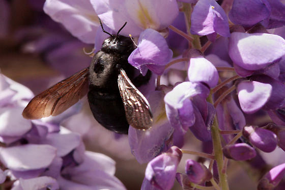 | Xylocopa iris | BugGuide | iNat |
| Nomiine Bees | Pseudapis spp. | BugGuide | iNat |
| Digger Bees | Amegilla spp. | BugGuide | iNat |
| Sweat Bees 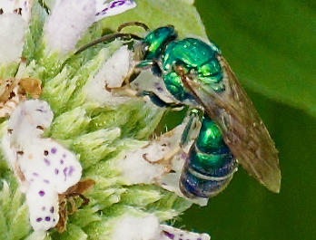 | Halictidae family | BugGuide | iNat |
| Hoverflies 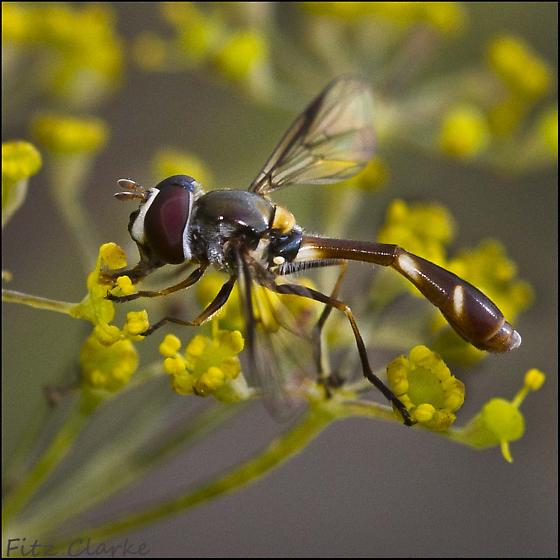 | Syrphidae family | BugGuide | iNat |
| Bee Beetles | Trichiinae subfamily | BugGuide |